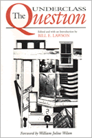

<body bgcolor="#FFFFFF" text="#000000" link="#0000FF" vlink="#CC0000" alink="#CC0000"><center><hr width="350" size="1" align="center" noshade>African American philosophers discuss "underclass"<hr width="350" size="1" align="center" noshade><p><a href="https://cdcshoppingcart.uchicago.edu/Cart/ChicagoBook.aspx?ISBN=9780877229223&&PRESS=temple" target="_top">Buy this book!</a> | <a href="https://cdcshoppingcart.uchicago.edu/Cart/Cart.aspx?PRESS=temple" target="_top">View Cart</a> | <a href="https://cdcshoppingcart.uchicago.edu/Cart/Cart.aspx?PRESS=temple" target="_top">Check Out</a></p><p></p></center><!--none//--><h1>The Underclass Question</h1>
<h3>edited by Bill E. Lawson, foreword by William Julius Wilson</h3>
<P>cloth 0-87722-922-8 $85.50, Jun 92, <FONT COLOR=#990033>Available</FONT>
<br>paper 1-56639-062-1 $22.95, Dec 92, <FONT COLOR=#990033>Out of Stock Unavailable</FONT>
<br>Electronic Book 1-43990-595-9 $30.95 <FONT COLOR=#990033>Available</FONT>
<BR> 232 pp
6x9
</P><BLOCKQUOTE><I>"...a uniquely telling volume.... These probing essays are a welcome antidote to the unanalyzed buzz-words and attitudes that shape American notions of race, class, and the disaffected among us."</I>
<br>&#151<b>U.S. Congresswoman Eleanor Holmes Norton</b>, District of Columbia<I></I></BLOCKQUOTE>
<p>This collection of original essays by well-known African-American philosophers considers questions raised by the existence of a group of people in this country whose lives dramatically contradict the American Dream. The plight of the so-called underclass has given rise to intense debates over what social scientists have termed "the paradox of social progress." This is the first full-length philosophical treatment of the underclass debate and one of the few volumes of written by African-American philosophers.
<p>The contributors discuss whether the underclass is simply a new label for the poor or whether it indeed represents a distinct class, and they ask: Are there values that are unique to poor urban blacks? What does rap music tell us about the underclass? Do middle-class blacks have an obligation toward poor urban blacks? What are the obligations of the American government to the urban poor? What is wrong with the current conception of urban poverty? The authors find that a combination of attitudes and assumptions about the impact of race, class, the economy, government policies, and conceptions of citizenship makes it difficult to formulate policies that redress the problems faced by the urban poor.
<BR>&nbsp;<h2>Reviews</h2>
<p><I>"One of the most intriguing, useful and stimulating responses not only to Wilson's book but to the whole debate on the urban underclass and the 'race vs. class' analysis of black poverty and alleged pathology.... [I]t should be required reading."</I>
<br>&#151<b><I>United Press International</I></b>
<p><I>"The subject is an important one and this is the only treatment of it by professional philosophers."</I>
<br>&#151<b>T. Kermit Scott</b>, Purdue University
<p><I>"This is sure to be a dominant volume in the discussion around race and class in American society. I found the essays in this volume absorbing and learned...an important work."</I>
<br>&#151<b>Molefi Kete Asante</b>
<BR>&nbsp;<h2>Contents</h2><P>
<p>Foreword &#150 William Julius Wilson
<br>Preface
<br>1. Meditations on Integration &#150 Bill E. Lawson
<p><b>Part I: Class Analysis</b>
<br>2. The Underclass and the Race/Class Issue &#150 Bernard R. Boxill
<br>3. Agency and the Concept of the Underclass &#150 Leonard Harris
<p><b>Part II: Urban Values</b>
<br>4. The Black Underclass and the Question of Values &#150 Howard McGary
<br>5. Marooned in America: Black Urban Youth Culture and Social Pathology &#150 Tommy L. Lott
<br>6. Uplifting the Race: Middle-Class Blacks and the Truly Disadvantaged &#150 Bill E. Lawson
<p><b>Part III: Social Policy</b>
<br>7. Legal Rights for Poor Blacks &#150 Anita L. Allen
<br>8. Affirmative Action and the Urban Underclass &#150 Albert G. Mosley
<br>9. Social Policy, Ethical Life, and the Urban Underclass &#150 Frank M. Kirkland
<p>Epilogue: Back on the Block
<br>10. Philosophy and the Urban Underclass &#150 Cornel West
<br>About the Contributors
<br>Index
</P><BR>&nbsp;<H2>About the Author(s)</H2>
<P><b>Bill E. Lawson</b> is Associate Professor of Philosophy at the University of Delaware.</P>
<P>Contributors: Bernard R. Boxill, Leonard Harris, Howard McGary, Tommy L. Lott, Anita L. Allen, Albert G. Mosley, Frank M. Kirkland, Cornel West, and the editor.</P>
<BR><H2>Subject Categories</H2>
<p><A HREF="/tempress/philosophy.html" TARGET="_top">Philosophy and Ethics</a>
<BR><A HREF="/tempress/urban.html" TARGET="_top">Urban Studies</a>
<BR><A HREF="/tempress/african.html" TARGET="_top">African American Studies</a>
</p>
<p align="center"><a href="https://cdcshoppingcart.uchicago.edu/Cart/ChicagoBook.aspx?ISBN=9780877229223&&PRESS=temple" target="_top">Buy this book!</a> | <a href="https://cdcshoppingcart.uchicago.edu/Cart/Cart.aspx?PRESS=temple" target="_top">View Cart</a> | <a href="https://cdcshoppingcart.uchicago.edu/Cart/Cart.aspx?PRESS=temple" target="_top">Check Out</a></p><p><font face="Arial" size="1"><a href="copyright.html" onMouseOver="window.status='Web Copyright Policy';return true;" onMouseOut="window.status=''" title="Web Copyright Policy">&copy;</a> 2015 <a href="http://www.temple.edu" target="new" onMouseOver="window.status='Link to Temple University home page';return true;" onMouseOut="window.status=''" title="Link to Temple University home page">Temple University</a>. All Rights Reserved. http://www.temple.edu/tempress/titles/872_reg.html</font></p>